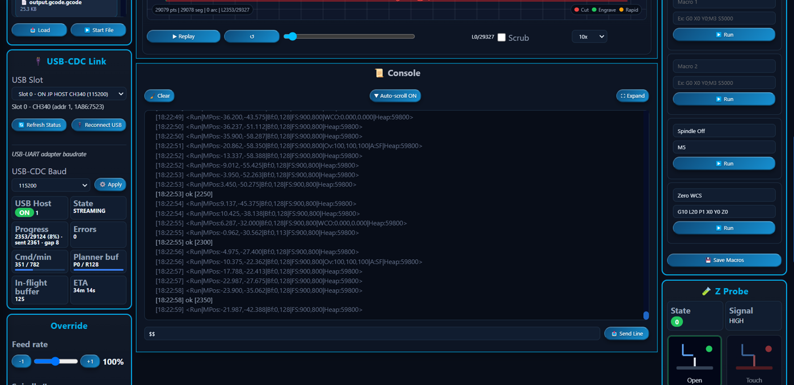
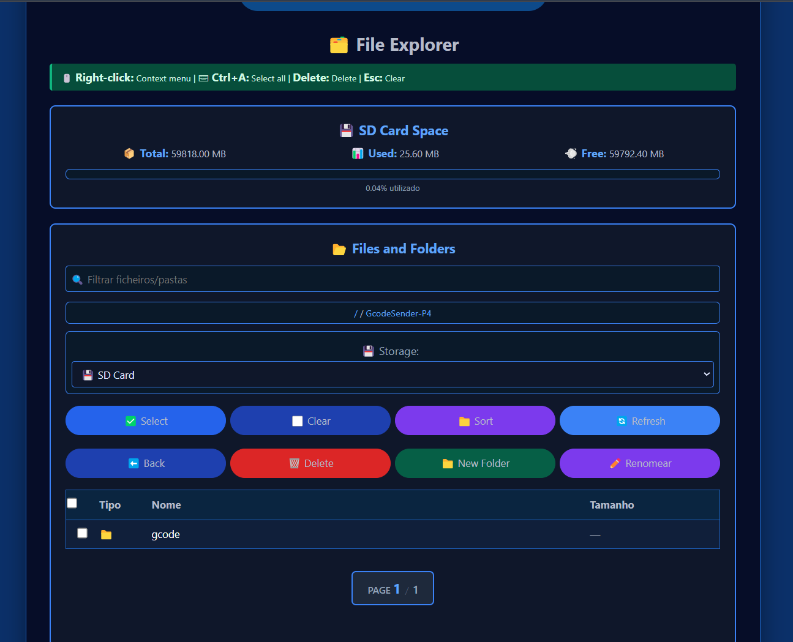
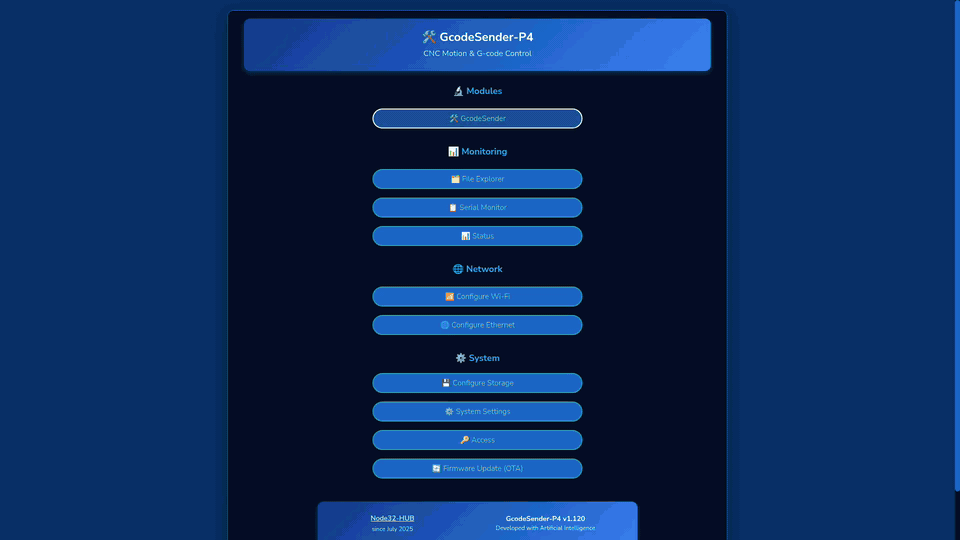
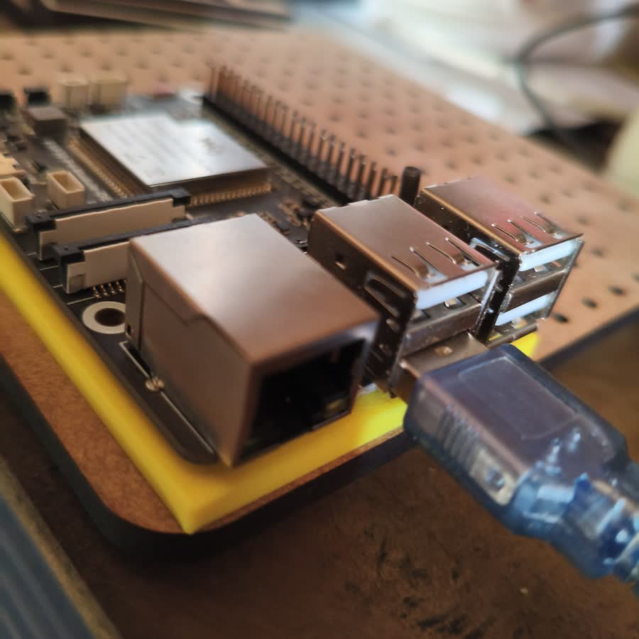

What it does
- USB Host — drives CH340 and CH341 GRBL boards directly, with baud detection.
- Dual storage — streams from microSD, falls back to PSRAM; hybrid mode keeps small files in RAM.
- Local preview — the toolpath, bounds and a job heatmap are computed in the browser; the board only sends bytes.
- Laser and spindle — power/speed overrides and laser mode for diode heads.
- Recovery — resume after a stop, error reporting from the controller, dockable panels.


Install
- Flash
firmware.binover USB with the WebFlasher (the P4 has its own port), or update at/ota. Full guide: how to flash. - Join
NODE32-HUB(password12345678), open192.168.4.1, set Wi-Fi. - Connect the GRBL controller to the P4's USB Host port and pick it in the USB-CDC panel.
- Open
/grbl-controller, upload a file, jog to the origin and run.
Hardware
- Board — ESP32-P4 with USB Host (native OTG).
- Controller — any GRBL board with a CH340/CH341 USB bridge.
- Storage — microSD for the file library; PSRAM for streaming.
- Not — no parallel port, no SD-less long jobs.

